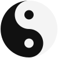

यादृच्छिक बुकमार्क
अधिकतर लोग अपने बुकमार्क भूल जाते हैं। यादृच्छिक बुकमार्क उन्हें फिर उपयोगी बनाता है: एक कुंजी दबाएँ और KeyPilot एक सहेजी साइट खोलता है। एक साथ कई यादृच्छिक बुकमार्क भी खोले जा सकते हैं। पेज फिर खोजने का यह सुविधाजनक तरीका है।
कीबोर्ड से ब्राउज़िंग
Noctivagous Software का Chrome एक्सटेंशन
माउस से ब्राउज़ करें।
कीबोर्ड से सक्रिय करें।
वेब पर आगे बढ़ने का तेज़ तरीका।
मुख्य इशारा
माउस से निशाना लगाएँ। कुंजी से क्लिक करें।


KeyPilot इस्तेमाल करना कैसा लगता है
हमने दो कुंजी क्रियाओं वाला KeyPilot का छोटा डेमो बनाया है। लिंक पर होवर करें और खोलने के लिए F दबाएँ। वापस जाने के लिए D दबाएँ।
यह डेमो डेस्कटॉप के लिए है, जहाँ माउस और कीबोर्ड साथ इस्तेमाल होते हैं।
वाटरफ्रंट समाचार
The Harbor Gazette
 इस सप्ताहांत बंदरगाह की रोशनी वापस आ रही है
घाट पर शाम की सैर फिर खुली
Gazette के बारे में
इस सप्ताहांत बंदरगाह की रोशनी वापस आ रही है
घाट पर शाम की सैर फिर खुली
Gazette के बारे में
टीमों ने घाट 4 पर आखिरी लैंप पूरे किए, और दो साल का जीर्णोद्धार खत्म हुआ।
शाम की सैर सूर्यास्त के बाद फिर खुलेगी। बाज़ार के स्टॉल एक घंटा और खुले रहेंगे।
पढ़ें: घाट पर शाम की सैर फिर खुली
प्रोमेनेड सूर्यास्त के बाद फिर खुला है, घाट 4 पर अतिरिक्त रोशनी के साथ।
स्थानीय दुकानों को वाटरफ्रंट पर व्यस्त पतझड़ सप्ताहांत की उम्मीद है।
The Harbor Gazette 1884 से Mid-Coast और Penobscot Bay की खबरें छापता रहा है।
यह छोटा अखबार इसलिए है ताकि आप KeyPilot की F और D कुंजियाँ आज़मा सकें।
कीबोर्ड
KeyPilot में कुंजी क्रियाओं का पूरा लेआउट है। नीचे कीबोर्ड संदर्भ विंडो की नकल है, जिसे प्रोग्राम इस्तेमाल करते समय खुला रखा जा सकता है। डिफ़ॉल्ट ब्राउज़िंग लेआउट पर कुंजी क्या करती है, यह देखने के लिए उस पर होवर करें।
ये दो नमूना कुंजियाँ की-क्लिक की उपयोगिता दिखाती हैं।
अधिकतर लोग अपने बुकमार्क भूल जाते हैं। यादृच्छिक बुकमार्क उन्हें फिर उपयोगी बनाता है: एक कुंजी दबाएँ और KeyPilot एक सहेजी साइट खोलता है। एक साथ कई यादृच्छिक बुकमार्क भी खोले जा सकते हैं। पेज फिर खोजने का यह सुविधाजनक तरीका है।
आप किसी भी साइट समूह के साथ अपनी Open URLs कुंजी बना सकते हैं। हमने एक स्टॉक कुंजी शामिल की है, सोशल मीडिया, जो पाँच प्रमुख सोशल मीडिया वेबसाइट टैब में साथ खोलती है। एक कुंजी दबाकर Open URLs कुंजी एक साथ अलग टैब में 30 URL तक खोल सकती है।
पेज पर


द्विमोड नियंत्रण
सोचें कि गिटार एक वाद्य के रूप में कैसे काम करता है। दोनों हाथों के अलग काम हैं।
दोनों काम एक-दूसरे पर निर्भर हैं। सुर बजने के लिए बायाँ हाथ उसे तैयार करे। बायाँ हाथ सुर बजाने के लिए दाएँ हाथ पर निर्भर है, वरना वह चुप रहेगा।

Noctivagous बताता है कि डेस्कटॉप सॉफ़्टवेयर पर माउस का नियंत्रण उन्हीं सिद्धांतों की तलाश करे। आज माउस इस्तेमाल करते समय वह 1) दिशा देना (कर्सर हिलाना) और 2) काम शुरू करना (चीज़ों पर क्लिक) एक ही उपकरण और जगह में जोड़ देता है। यह सब एक हाथ को सौंप देता है, जिससे सोच का बोझ बढ़ता है।
इन भूमिकाओं को अलग करना, उन्हें दोनों हाथों वाली दो इनपुट जगहों में बाँटना, उपयोगकर्ता को सॉफ़्टवेयर पर ज़्यादा नियंत्रण देता है। ट्रैकपैड कर्सर की दिशा देता रह सकता है, जबकि "क्लिक" कहीं और होते हैं, पहली बार दूसरे हाथ से। एक अलग सॉफ़्टवेयर गति बनती है, जैसा ऊपर के डेमो में दिखता है। सॉफ़्टवेयर डेवलपर के लिए UI सिद्धांत में नए मौके खुलते हैं।
ध्यान देने वाली बात यह है कि माउस 1968 में एक व्यक्ति ने बनाया, Douglas Engelbart, और तब से वह वैसा ही है। उस समय यह पर्सनल कंप्यूटर का उन्नयन था, लेकिन दशकों बाद कई मामलों में कंप्यूटर पर काम करने का यह थकाऊ तरीका बन जाता है। टचस्क्रीन टैबलेट ने इसे अप्रासंगिक नहीं किया। एक तो स्क्रीन की वस्तु को सीधे छूना सटीक नहीं होता। कंप्यूटर के साथ दोनों तरह की बातचीत में सुधार की जगह है, और दोनों द्विमोड नियंत्रण / दोहरे इनपुट सिद्धांत से लाभ ले सकते हैं।
यह एक्सटेंशन एक UI सिद्धांत को आगे बढ़ाने के लिए है जिसे हम द्विमोड नियंत्रण कहते हैं। कर्सर पहले की तरह माउस से चलाएँ, लेकिन माउस बटन की जगह कीबोर्ड कुंजियों से सक्रिय करें। लिंक पर होवर करें और क्लिक के लिए F दबाएँ, या नए बैकग्राउंड टैब में खोलने के लिए G। यह तेज़ है। इसे की-क्लिक कहते हैं।
F के अलावा कई कुंजी क्रियाएँ उपलब्ध हैं। KeyPilot की ताकत यहीं है: की-क्लिक फ़ंक्शनों वाला कीबोर्ड लेआउट, जिसे बिल्ट-इन लेआउट कॉन्फ़िग एडिटर में बदला जा सकता है। यह मुफ़्त है और MIT लाइसेंस के अंतर्गत है।
इस पेज का की-क्लिक एनिमेशन इशारा दिखाता है: माउस से निशाना लगाएँ, खोलने के लिए F दबाएँ, फिर वापस जाने के लिए D।
KEYPILOT क्यों
MIT लाइसेंस और ओपन सोर्स।
ताकत के लिए बना कीबोर्ड लेआउट।
एक्सटेंशन तुरंत इंस्टॉल होते हैं।